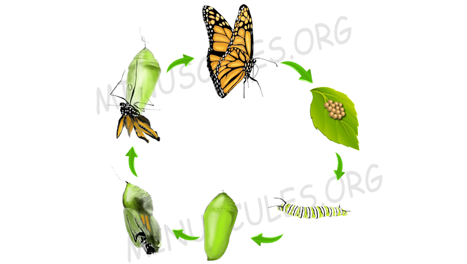

Evolution of metamorphosis
07/07/2020 It is now known for over 400 years how various animals undergo adverse physical changes during their life, how a caterpillar changes into a butterfly, and a tadpole into a frog. Metamorphosis, the process by which an animal develops after birth or hatching and goes through relatively abrupt physical changes. This is one of the most wonderful phenomena of nature and how it evolved is still a mystery.
Several varieties of animals undergo metamorphosis, from invertebrates like jellyfish, insects, to vertebrates like amphibians. More than 60% of all animal species undergo metamorphosis, most of which are from the order Insecta. It is of two types, namely incomplete metamorphosis, and complete metamorphosis. In the incomplete metamorphosis the juvenile stage called Nymph has a similar physical structure to that of the adults while in complete-metamorphosis, each stage has distinct features.
Insects are the most diverse organisms, and around 50% of them go through complete metamorphosis, the reason behind their varying existence in so many numbers is metamorphosis. Similarly, in other phylum, organisms have gained an advantage over others by adapting this phenomenon. The different forms of an organism occupy different niches, thus reducing competition for territory and food, this increases the chances of survival of one species over others. By thriving on different food and habitat, juveniles do not have to compete with the adults for the resources. Like the caterpillars which are the juvenile form of butterflies and moths belonging to the order Lepidoptera, generally feeds upon leaves and accumulates food until it gets enough to form a pupa and turn into a Butterfly or a Moth, after then the feed on the nectar of various flowers. Similarly, Frogs and Toads experience metamorphosis in four stages, the larvae inhabit water bodies from small water pits to large lakes, and the adults mostly live on the ground and go into the water only for mating.
The question of how this phenomenon might have evolved is still unanswered, the complex developmental biology that is very distinct from animals that do not undergo metamorphosis. Humans have been trying to find the answer since the late 1500s, and have discovered a lot till now. A possible theory is that when eggs with immature embryos hatched, some of them were able to survive without the nutrition that would have been provided by the egg for further growth, they might have already developed digestive systems by the time and could survive on their own. Later they might have tried to grow into adults and through natural selection, the trait for developing a pupa got selected. Later on, the mutations with the best defense and digestive mechanisms got selected and after millions of years, these organisms outnumbered the other animals which occupied the same niche but didn’t undergo metamorphosis. There is no proof to support this theory unless fossils of that period can be found of those animals which were able to survive as undeveloped juveniles outside the egg. The fossils of the animals in this gap will be of great importance in the understanding of the animal world, and how different mechanisms evolved.
Author :
DEV BAGDI
Related Articles

The Beautiful Dragon
New"Dragonflies hunt insects with great precision and have a 95% success rate and can eat 30 flies in a row," says Dr. Stacey Combes studying Dragonfly biomechanics at Harvard...

Wiggle Waggle for survival
NewWhile peacocks are known for their bonnie dance, these peacock spiders are known for hokey pokey dance showing off their stylish fans...

Ant That Love Electronics
NewYes, you read the title right! These ants, or to be precise, Raspberry Crazy Ants, seems to be attracted to electrical equipments. Nylanderia fulva which is an ant found in South America is not called “crazy” due to their weird infatuation for our gadgets, but because of their random, nonlinear movements...